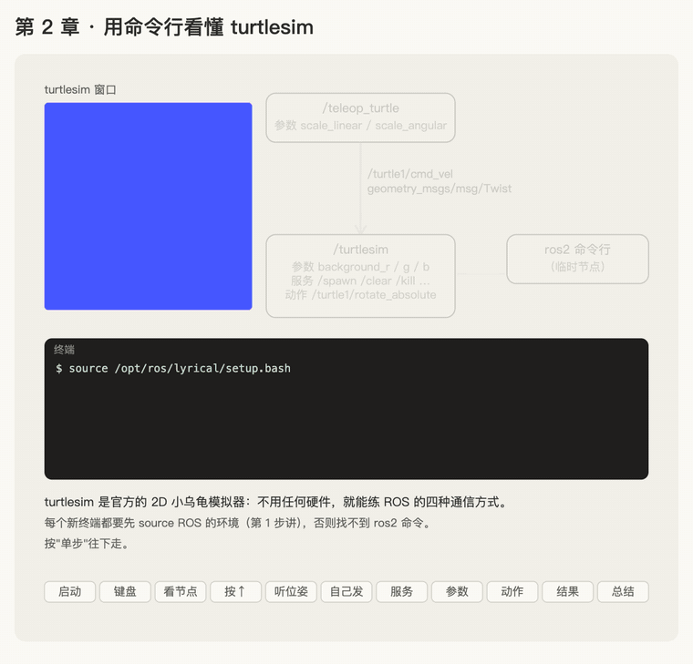

第 2 章 · 用命令行看懂 turtlesim
本章回答：一个真实的 ROS 系统跑起来是什么样？怎么用
ros2命令行看清楚里面有哪些节点、它们之间怎么通信，还能自己插一脚？
讲解日期：2026-11-05 · 上一章：第 1 章 ROS 2 是什么 · 下一章：第 3 章 日志、launch 和 bag
对应原文：ros2_documentation/source/ROS-Framework/下的 Understanding-ROS2-Nodes / -Topics / -Services / -Parameters / -Actions 五篇教程（都是.../Understanding-ROS2-<X>/Understanding-ROS2-<X>.rst）（路径相对ros2/materials/）
对应 study-plan 阶段 A3–A5，动手里程碑 R-M1（本机装好环境后照着敲一遍）。
本章缩写：CLI = Command-Line Interface（命令 / 行 / 界面：在终端里敲命令的用法）；Twist（不是缩写，"扭转"：线速度 + 角速度的消息类型）；YAML = YAML Ain't Markup Language（一种写配置的文本格式，名字是递归玩笑）；rqt = ROS Qt（Qt 是一个图形界面库：ROS 的图形工具集）；stdout = standard output（标准 / 输出：终端打印的内容）。全部缩写见 附录 · 缩写与术语表
本章先看总图，再分 4 步：
| 步 | 内容 | 状态 |
|---|---|---|
| 0 | 总图：turtlesim 计算图 + 命令演示 | ✅ 2026-11-05 |
| 1 | 节点：source 环境、ros2 run、node list / info、改名 |
✅ |
| 2 | 话题：topic list / echo / info / pub / hz、interface show |
✅ 2026-11-13 |
| 3 | 服务和参数：service call、param get / set / dump |
✅ 2026-11-13 |
| 4 | 动作：action send_goal、反馈、取消与放弃 |
✅ 2026-11-13 |
讲解
总图 · turtlesim 里的四种通信

可交互版：animations/02-turtlesim-graph.html，可单步。在 Claude 内置浏览器里看要走本地服务器：启动 ros2-animations 预览后打开 http://localhost:8340/02-turtlesim-graph.html（原因见第 1 章总图）。
turtlesim 是官方的 2D 小乌龟模拟器，不用任何硬件就能把第 1 章的四种通信方式全用一遍：
[/teleop_turtle] 键盘遥控节点
│ 话题 /turtle1/cmd_vel（Twist：线速度 + 角速度）
▼
[/turtlesim] 模拟器节点
│ 发布话题 /turtle1/pose（乌龟位置和朝向）
│ 提供服务 /spawn /clear /reset /kill /turtle1/set_pen …
│ 提供动作 /turtle1/rotate_absolute（转到指定朝向）
│ 参数 background_r / g / b（背景色）
▲
[ros2 命令行] 每次运行都是一个临时节点，能听、能发、能调用
| 类型 | turtlesim 里的例子 | 用哪个命令看 / 用 |
|---|---|---|
| 话题 | /turtle1/cmd_vel、/turtle1/pose |
ros2 topic echo、ros2 topic pub |
| 服务 | /spawn（再生一只乌龟） |
ros2 service call |
| 参数 | background_r（背景红色分量） |
ros2 param get / set |
| 动作 | /turtle1/rotate_absolute |
ros2 action send_goal |
命令套路都一样：ros2 <对象> <动作>，对象是 node / topic / service / param / action / interface，动作是 list / info / echo / call / get / set / send_goal 等。
第 1 步 · 节点：跑起来，看名字，看连接
1. 先 source。 每打开一个新终端，都要先运行：
source /opt/ros/lyrical/setup.bash
白话：ROS 装在 /opt/ros/lyrical/ 里，但终端默认不知道它在那。source 这句话就是"告诉这个终端 ROS 在哪"：把 ros2 命令和所有 ROS 包的位置加进环境变量。不 source，就会报 ros2: command not found。嫌麻烦可以把这句写进 ~/.bashrc，每次开终端自动执行（Get-Started/Configuring-ROS2-Environment.rst 第 1–2 步）。
2. ros2 run <包名> <可执行文件名> 启动一个节点。
ros2 run turtlesim turtlesim_node
- 包（package）：ROS 软件的打包单位，一个包里可以有多个可执行文件。
turtlesim包里有turtlesim_node、turtle_teleop_key、draw_square、mimic四个（ros2 pkg executables turtlesim可查）。 - 可执行文件名 ≠ 节点名。
turtlesim_node跑起来，计算图里的节点叫/turtlesim；turtle_teleop_key跑起来叫/teleop_turtle（Understanding-ROS2-Nodes.rst第 1 步）。 - 类比：包 = 一个工具箱，可执行文件 = 箱子里的一件工具，节点名 = 工具开始干活后在工地上挂的工牌。
3. ros2 node list：现在有哪些节点在跑。 开着 turtlesim 和遥控，会看到：
/turtlesim
/teleop_turtle
4. ros2 node info <节点名>：这个节点和外界有哪些连接。 输出分六栏（Understanding-ROS2-Nodes.rst 第 3 步）：
| 栏 | /turtlesim 里有什么 |
|---|---|
| Subscribers（订阅的话题） | /turtle1/cmd_vel |
| Publishers（发布的话题） | /turtle1/pose、/turtle1/color_sensor、/rosout（日志）、/parameter_events |
| Service Servers（提供的服务） | /spawn、/clear、/kill、/reset、/turtle1/set_pen、/turtle1/teleport_*，以及一组 /turtlesim/get_parameters 之类 |
| Service Clients | 无 |
| Action Servers（提供的动作） | /turtle1/rotate_absolute |
| Action Clients | 无 |
每一项后面都写着类型，比如 /turtle1/cmd_vel: geometry_msgs/msg/Twist。
两个值得注意的地方：
- 每个节点都自带
/rosout（日志）、/parameter_events和一组…/get_parameters、…/set_parameters服务。参数在底层就是用服务读写的，第 3 步会用到。 - 消息类型的名字有三段：
包名/种类/类型名，种类是msg、srv、action之一。比如turtlesim_msgs/srv/Spawn（Kilted 之前的版本是turtlesim/srv/Spawn）。
5. 改名（remap）。 同一个可执行文件可以启动多次，用 --ros-args --remap __node:=新名字 给它起不同的节点名：
ros2 run turtlesim turtlesim_node --ros-args --remap __node:=my_turtle
这会再开一个模拟器窗口，节点叫 /my_turtle，node list 里就有三个节点。remap 不光能改节点名，也能改话题名和服务名（同文 2.1 节）。
和本仓库的连接：机器人上出问题时，第一件事往往就是 ros2 node list 看该在的节点在不在，再 ros2 node info 看连接对不对。比如 VLA 策略节点没动作，先查它是不是真的订阅到了 /image。
第 2 步 · 话题：看、听、自己发
依据：ROS-Framework/interfaces/topics/Understanding-ROS2-Topics/Understanding-ROS2-Topics.rst（下称"话题教程"）。
1. 画出计算图：ros2 run rqt_graph rqt_graph。 会弹出一张图：椭圆是节点，方框是话题，箭头是数据流向。开着 turtlesim 和遥控时，能看到 /teleop_turtle → /turtle1/cmd_vel → /turtlesim。系统大了以后，这是看"谁连着谁"最快的办法（话题教程第 2 步）。
2. 列话题：ros2 topic list -t。 -t 会把类型一起列出：
/parameter_events [rcl_interfaces/msg/ParameterEvent]
/rosout [rcl_interfaces/msg/Log]
/turtle1/cmd_vel [geometry_msgs/msg/Twist]
/turtle1/color_sensor [turtlesim_msgs/msg/Color]
/turtle1/pose [turtlesim_msgs/msg/Pose]
3. 听：ros2 topic echo /turtle1/cmd_vel。 刚运行时什么都不打印，因为还没人发。切到遥控终端按方向键，这边就会打出每一条 Twist：
linear:
x: 2.0
y: 0.0
z: 0.0
angular:
x: 0.0
y: 0.0
z: 0.0
---
按 ↑ 发的就是"线速度 x 方向 2.0"。echo 本身就是一个新的订阅者，它加入计算图时不打扰原有的连接（第 1 章总图里"录数据 = 多开一个订阅者"同理）。
4. 看连接数：ros2 topic info /turtle1/cmd_vel。
Type: geometry_msgs/msg/Twist
Publisher count: 1
Subscription count: 2
为什么订阅者是 2？一个是 /turtlesim，另一个就是你刚开着的 topic echo。加 --verbose 还能看到每个发布者、订阅者的节点名和 QoS 设置（第 7 章讲 QoS）。
5. 看消息格式：ros2 interface show geometry_msgs/msg/Twist。 输出说明 Twist 由两个三维向量组成：
Vector3 linear # 线速度：x 前后、y 左右、z 上下
Vector3 angular # 角速度：绕 x、y、z 轴转多快
小乌龟是平面上的，只用得到 linear.x（往前）和 angular.z（原地左转右转）。同一个 Twist（或带时间戳的版本 TwistStamped）也是真实轮式机器人底盘的标准速度指令，Nav2 最后输出给底盘的就是这类消息（第 17 章）。
6. 自己发：ros2 topic pub。 消息内容用 YAML 写在引号里（话题教程第 7 步）：
# 只发一次
ros2 topic pub --once /turtle1/cmd_vel geometry_msgs/msg/Twist "{linear: {x: 2.0}, angular: {z: 1.8}}"
# 每秒发一次，乌龟一直绕圈
ros2 topic pub --rate 1 /turtle1/cmd_vel geometry_msgs/msg/Twist "{linear: {x: 2.0}, angular: {z: 1.8}}"
只写要改的字段，其余默认是 0。乌龟会边走边转，画出一段弧。用 --rate 1 时它会一直转圈，因为每秒都有新指令。
为什么按一下方向键只走一小段？ turtlesim 收到速度指令后只执行一小会儿就停，没有新指令就停车。官方的解释是：真实机器人如果和操作员断线，不该一直按最后一条指令跑下去（Introducing-Turtlesim.rst 第 3 步的说明）。这个"指令超时就停"的思路在真机底盘上叫看门狗（watchdog），第 15–16 章 ros2_control 还会遇到。
7. 看频率和带宽：ros2 topic hz / ros2 topic bw。
$ ros2 topic hz /turtle1/pose
average rate: 59.354 ← turtlesim 大约每秒发 60 次位姿
$ ros2 topic bw /turtle1/pose
1.51 KB/s from 62 messages ← 每条约 0.02 KB
注意：这两个数字是 hz / bw 自己作为订阅者收到的，受电脑负载和 QoS 影响，不一定等于发布端的真实频率（话题教程第 8–9 步的提示）。调机器人时，topic hz /camera/image_raw 是查"相机是不是掉帧了"的第一招。
第 3 步 · 服务和参数
依据：.../Understanding-ROS2-Services.rst（下称"服务教程"）、.../Understanding-ROS2-Parameters.rst（下称"参数教程"）。
服务：先看有什么、长什么样，再调用。
| 命令 | 作用 | turtlesim 的例子 |
|---|---|---|
ros2 service list -t |
列出所有服务和类型 | /spawn [turtlesim_msgs/srv/Spawn]、/clear [std_srvs/srv/Empty] |
ros2 service type /spawn |
只看一个服务的类型 | turtlesim_msgs/srv/Spawn |
ros2 service find std_srvs/srv/Empty |
反查：哪些服务是这个类型 | /clear、/reset |
ros2 interface show turtlesim_msgs/srv/Spawn |
看请求和回复的格式 | 见下 |
ros2 service call <名字> <类型> "<YAML>" |
调用 | 见下 |
Spawn 的格式（服务教程第 6 步）：
float32 x
float32 y
float32 theta
string name # 可选；留空会自动起名并在回复里返回
---
string name
--- 上面是请求，下面是回复。Empty 类型上下都是空的：只是"喊一声"，不带数据。调用：
ros2 service call /spawn turtlesim_msgs/srv/Spawn "{x: 2, y: 2, theta: 0.2, name: ''}"
窗口左下角多出一只乌龟，终端打印回复 Spawn_Response(name='turtle2')。新乌龟会带着自己的一套话题 /turtle2/cmd_vel、/turtle2/pose。ros2 service call /clear std_srvs/srv/Empty 则清掉画过的轨迹。
想看服务调用的实时往来，可以用 ros2 service echo，但它要求节点打开"服务内省"（introspection）功能，turtlesim 没开（服务教程第 8 步）。
参数：读、改、存、载。
| 命令 | 作用 |
|---|---|
ros2 param list |
列出每个节点的参数 |
ros2 param get /turtlesim background_g |
读一个参数：Integer value is: 86 |
ros2 param set /turtlesim background_r 150 |
运行中改：窗口背景立刻变色，Set parameter successful |
ros2 param dump /turtlesim > turtlesim.yaml |
把当前全部参数存成 YAML 文件 |
ros2 param load /turtlesim turtlesim.yaml |
把文件里的参数灌回正在运行的节点 |
ros2 run turtlesim turtlesim_node --ros-args --params-file turtlesim.yaml |
启动时就用文件里的参数 |
dump 出来的文件长这样（参数教程第 5 步）：
/turtlesim:
ros__parameters:
background_b: 255
background_g: 86
background_r: 150
use_sim_time: false
这就是真实项目里配置机器人的方式：Nav2、ros2_control 的几百个参数全写在这种 YAML 里，启动时用 --params-file 或 launch 文件加载（第 3 章）。
服务和参数的关系：第 1 步说过，每个节点都自带 …/get_parameters、…/set_parameters 等服务。ros2 param set 背后就是调用了 /turtlesim/set_parameters 这个服务。
第 4 步 · 动作：目标 → 反馈 → 结果
依据：.../Understanding-ROS2-Actions.rst（下称"动作教程"）。
用键盘发动作。 遥控终端里除了方向键，还提示 Use G|B|V|C|D|E|R|T keys to rotate to absolute orientations. 'F' to cancel a rotation.。这 8 个字母在键盘上正好围着 F 一圈，每个字母对应一个朝向。按一下，就是给 /turtlesim 里的动作服务器 /turtle1/rotate_absolute 发了一个目标：转到那个朝向（动作教程第 2 步）。
三种结局：
| 情况 | 谁发起 | turtlesim 终端打印 |
|---|---|---|
| 转完了 | — | Rotation goal completed successfully |
| 转到一半按 F | 客户端取消（cancel） | Rotation goal canceled |
| 转到一半又按了另一个字母 | 服务端放弃旧目标（abort） | Rotation goal received before a previous goal finished. Aborting previous goal |
第三种值得注意：新目标来了、旧目标还没完时怎么办，ROS 不统一规定，由每个动作服务端自己决定。turtlesim 选择"接受新的、放弃旧的"，别的服务端也可以拒绝新目标，或两个都保留（动作教程第 2 步末尾）。
用命令行看和发。
ros2 action list -t
# /turtle1/rotate_absolute [turtlesim_msgs/action/RotateAbsolute]
ros2 action info /turtle1/rotate_absolute
# Action clients: 1 /teleop_turtle
# Action servers: 1 /turtlesim
ros2 interface show turtlesim_msgs/action/RotateAbsolute
动作的格式有两条 ---，分成三段（第 1 章第 2 步讲过）：
float32 theta # 目标：想要的朝向（弧度，绝对值）
---
float32 delta # 结果：实际转过的角度
---
float32 remaining # 反馈：还剩多少没转
发一个目标并打印反馈：
ros2 action send_goal /turtle1/rotate_absolute turtlesim_msgs/action/RotateAbsolute "{theta: -1.57}" --feedback
输出依次是：Goal accepted with ID: …（服务端接受）→ 一串 Feedback: remaining: -3.12…、-3.11…（边转边报）→ Result: delta: 3.12… → Goal finished with status: SUCCEEDED（动作教程第 7 步）。
theta 的单位是弧度：1.57 ≈ π/2 = 90°，-1.57 就是朝下。而且是绝对朝向（转到哪个方向），不是"再转多少"。
每个目标有一个 ID：同一个服务端可以同时管多个目标，靠 ID 区分。这也是动作比服务"重"的地方：要维护目标状态、发反馈、处理取消。所以短任务用服务，长任务才用动作。
练习与作答记录
练习 2-1（第 1 步）：同时开着 /turtlesim 和 /my_turtle 两个模拟器，再开一个 turtle_teleop_key。按方向键时，两个窗口里的乌龟会不会一起动？为什么？（提示：看 node info /my_turtle 里它订阅的话题名。）
- 作答：（待作答）
练习 2-2（第 2 步）：ros2 topic info /turtle1/cmd_vel 显示 Subscription count: 2，可你只开了 turtlesim 一个模拟器。第二个订阅者是谁？
- 作答：（待作答）
练习 2-3（第 2 步）：写出让乌龟原地逆时针转圈（不前进）的 ros2 topic pub 命令，每秒发一次。
- 作答：（待作答）
练习 2-4（第 3 步）：你想让 turtlesim 每次启动背景都是黑色（RGB 全 0）。不改代码，写出需要的文件内容和启动命令。
- 作答：（待作答）
练习 2-5（第 4 步）：乌龟正在执行"转到朝下"的动作，你在命令行又发了一个"转到朝上"的目标。旧目标的结局是 canceled 还是 aborted？为什么？
- 作答：（待作答）
口诀
- 套路：
ros2 <对象> <动作>；对象是 node / topic / service / param / action / interface。 - 先看后用：
list -t看有什么，interface show看长什么样，再pub/call/set/send_goal。 - 话题三查：
echo看内容，info看谁连着，hz看频率够不够。 - 参数三件套：
get / set现场改，dump存 YAML，--params-file启动时载入。 - 动作三结局：成功、客户端取消（cancel）、服务端放弃（abort）。
本章复习卡片编号
R06–R09，见 ../review.md。
附录 · 延伸阅读
留给以后深入学习用，不影响本章主线。★ 是建议先读的。
materials/指ros2/materials/；不带前缀的路径在materials/ros2_documentation/source/下（design/、ecosystem/开头的在materials/下）；...表示省略了和上一条相同的目录。
推荐阅读
| 读什么 | 读哪里 | 读它为了什么 |
|---|---|---|
★ Introducing-Turtlesim.rst |
materials/ros2_documentation/source/Get-Started/Introducing-Turtlesim/Introducing-Turtlesim.rst |
安装与第一次运行。 |
★ Understanding-ROS2-Nodes.rst |
ROS-Framework/nodes/Working-with-nodes/Understanding-ROS2-Nodes/Understanding-ROS2-Nodes.rst |
ros2 run、node list、node info、remap（第 1 步依据）。 |
Configuring-ROS2-Environment.rst |
Get-Started/Configuring-ROS2-Environment.rst |
source 与环境变量。 |
Understanding-ROS2-Topics |
ROS-Framework/interfaces/topics/Understanding-ROS2-Topics/、services/.../Understanding-ROS2-Services/、parameters/.../Understanding-ROS2-Parameters/、actions/.../Understanding-ROS2-Actions/ |
第 2–4 步依据，也是总图动画里命令和输出的出处。 |
160_ros_command_line_arguments.md |
design/articles/160_ros_command_line_arguments.md |
--ros-args 与 remap 规则的设计。 |
数学原理
- 弧度：转一整圈是 \(2\pi\) 弧度 = 360°，所以 \(\pi/2\approx 1.57\) 是 90°。
- 匀速圆周：线速度 \(v\)、角速度 \(\omega\) 都不变时轨迹是圆，半径 \(r=v/\omega\)（代码对照里算的弧）。
公式清单
| 公式 / 规则 |
|---|
| 类型名 = 包名 / 种类（msg、srv、action）/ 类型名 |
| \(\pi/2\approx 1.57\) rad = 90° |
代码对照：把本章的数字用代码算一遍
纯 Python 模拟，不需要 ROS 2（原因见第 1 章这一节）。代码在仓库本地
ros2/solutions/chapter-code/ch02_turtlesim.py，配套测试tests/test_ch01_05.py；同名 notebook 在notebooks/ch02_turtlesim.ipynb（讲解和代码放在一起，一格一格跑）。Mac 上直接能跑：
bash cd ros2/solutions/chapter-code uv run python ch02_turtlesim.py # 一步一步打印 uv run pytest tests/test_ch01_05.py
讲义 ↔ 代码：
| 讲义 | 规则 / 数字 | 写法 | 跑出来 |
|---|---|---|---|
| 第 1 步 类型名 | 包名 / 种类 / 类型名 | split_type_name(...) |
turtlesim_msgs / srv / Spawn |
| 第 2 步 topic pub | 只写要改的字段，其余是 0 | fill_defaults(...) |
linear.y = 0.0 等 |
| 第 2 步 画弧 | linear.x = 2.0、angular.z = 1.8 | drive(..., seconds=1.0) |
x ≈ 1.08，y ≈ 1.36，朝向 1.8 rad |
| 第 4 步 弧度 | 1.57 ≈ π/2 = 90° | math.degrees(-1.57) |
−90.0° |
| 第 4 步 动作 | 反馈 remaining 变小，结果 delta | rotate_absolute(1.55, -1.57) |
反馈 −3.12 起；delta 3.12 |
关键几行：
x += v * math.cos(th) * dt # 往朝向的方向前进
y += v * math.sin(th) * dt
th += w * dt # 同时转 angular.z × dt
r = 2.0 / 1.8 # 匀速画圆：半径 = 线速度 / 角速度
x, y = r * math.sin(1.8), r * (1 - math.cos(1.8)) # 走 1 秒的解析解
代码里才看得到的 3 件事：
- 弧的数字：讲义只说"边走边转、画出一段弧"。代码按 1 ms 一小步积分，和解析解差不到 0.002；turtlesim 自己的积分步长不同，屏幕上的位置会略有差别。
- 动作的起始朝向 1.55 是编的，只为让第一条反馈接近讲义输出里的 −3.12；真 turtlesim 每次只转一小点，反馈会多很多条。
fill_defaults是递归的：Twist 里套着两个 Vector3，所以要一层层往下补 0，这和ros2 topic pub的 YAML 行为一致。
自己改一改（不影响练习答案）：
- 把
angular.z改成 0.9，看同样 1 秒弧的半径和终点怎么变； - 把
drive的seconds改成 2π/1.8 ≈ 3.49 秒，看乌龟是不是正好回到起点。